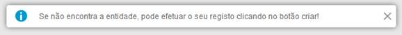
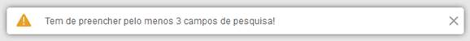
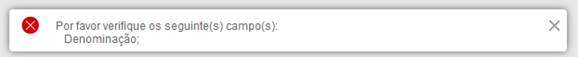
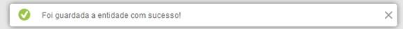

A correta Este Manual tem como propósito servir de guia de utilização, permitindo ao utilizador que durante o acesso e operação no SGES tenha disponível um conjunto de instruções e mecanismos de autoajuda que lhe possibilitem uma melhor interação com o Sistema.
O manual de utilizador do SGES está organizado pelo seguinte conjunto de capítulos:
·“Sobre este Manual”, o capítulo atual que descreve o conteúdo do manual, qual a sua organização e como pode ser consultado;
·“Tabela de Acrónimos”, que contêm todos os acrónimos usados ao longo deste manual e que permitirá familiarizar desde já o utilizador com determinadas abreviaturas apresentadas na aplicação;
·“Introdução”, onde é apresentado o sistema SGES, qual o seu contexto e propósito, incluindo os seguintes subcapítulos:
o“Objetivos do Sistema” onde se descrevem os propósitos da utilização da aplicação informática;
o“Conceitos básicos” onde se explicam os principais conceitos que suportam a aplicação, concretamente conceitos tipo “navegação" no sistema, explicando o que se entende por isso;
A tabela seguinte está ordenada por ordem alfabética segundo as siglas.
|
Sigla |
Designação |
|---|---|
|
ACSS |
Administração Central do Sistema de Saúde |
|
ACES |
Agrupamentos de Centros de Saúde |
|
ARS |
Administração Regional de Saúde |
|
EPE |
Entidade Pública Empresarial |
|
ERS |
Entidade Reguladora da Saúde |
|
ETCS |
|
|
IPSS |
Instituições Particulares de Solidariedade Social |
|
UF |
Unidade Funcional |
|
ULS |
Unidade Local de Saúde |
|
SPMS |
Serviços Partilhados do Ministério da Saúde |
|
PPP |
Parceria Público-Privada |
A tabela seguinte está ordenada por ordem alfabética segundo os termos.
|
Termo |
Definição |
|---|---|
|
Entidade |
|
|
Equipamento |
|
|
Estabelecimento |
|
|
Instalações |
|
O Sistema de Gestão de Entidades de Saúde (SGES) é um projeto estruturante para o sistema de informação de saúde, promovendo a criação de um repositório central de Entidades de Saúde, fiável e permanentemente atualizado, a partilhar com todos os SI, eliminando a redundância de informação e promovendo a melhoria da qualidade dos dados.
Objetivos do Sistema:
·Considerando a evolução dos requisitos funcionais e técnicos, resultante das iterações ocorridas com os diferentes intervenientes ao longo do projeto a que este sistema deu origem, identificam-se como principais objetivos conseguir através do SGES:
·Conhecer as entidades prestadoras de cuidados de saúde, a sua distribuição geográfica, a sua capacidade instalada e a sua relação com o SNS;
·Dispor de um repositório de entidades de saúde único, integrado e partilhado;
·Disponibilizar informação consistente, de qualidade e atempada aos diferentes SI da Saúde;
·Reduzir os custos de manutenção e implementação dos SI da Saúde;
·Maior celeridade na obtenção de respostas e tratamento de processos, por parte dos organismos utilizadores;
·Facilitar o acesso da informação sobre entidades de saúde ao cidadão;
·Reduzir o número de interações do cidadão com os serviços do SNS, para obtenção de informação sobre entidades convencionadas;
·Otimizar a gestão dos recursos disponíveis.
O utilizador interage com o SGES através da sua “Camada de Apresentação” com um browser de Internet.
Associada a essa interação existe um conjunto de conceitos para os quais é chamada a atenção neste Capítulo.
Todos os formulários que permitem criação ou edição de dados têm um conjunto de regras de negócio e validações para facilitar o preenchimento correto dos dados.
Para auxiliar as validações existem 4 tipos de mensagens:
·Mensagem de Informação

·Mensagem de Alerta

·Mensagem de Erro

·Mensagem de Sucesso

Assim, de modo a familiarizar o utilizador com a aplicação, apresentam-se de seguida alguns exemplos ilustrativos de ações genéricas de interação com o SGES.
O acesso ao SGES é realizado através da navegação até ao seu endereço em http://sges.min-saude.pt/SGES/login.html?1 num browser de Internet que o utilizador tenha disponível no seu computador e irá surgir-lhe a seguinte página:
Fig. 1 -Página de acesso do SGES
Caso o utilizador saiba as suas credenciais, inserir os campos obrigatórios, e clicar em “Avançar”.
|
Campos Obrigatórios Fig. 2 |
|
|---|---|
|
a) |
utilizador |
|
b) |
senha |
Fig. 2 -Introdução das credenciais
Caso contrário, deverá clicar em “Recuperar Senha”, inserir os campos obrigatórios, e clicar em “Enviar”.
|
Campos Obrigatórios Fig. 3 |
|
|---|---|
|
a) |
e-mail associado á conta da aplicação |
Fig. 3 -Recuperação da Senha
Uma vez identificado e autenticado, é apresentada ao utilizador a página de entrada do SGES, Fig. 4, onde pode então aceder às funcionalidades que lhe estão disponíveis.
Fig. 4 -Página de entrada no SGES
Fig. 5 -Página de entrada no SGES Entidade
A qualquer momento, o utilizador pode fazer a alteração da sua senha, clicando no seguinte botão situado no canto superior direito da página.
De seguida é lhe apresentada uma página de alteração de senha, Fig. 6. O utilizador deverá inserir os campos obrigatórios:
|
Campos Obrigatórios Fig. 6 |
|
|---|---|
|
a) |
senha utilizada atualmente |
|
b) |
nova senha pretendida |
|
c) |
repetição da senha pretendida |
Após o preenchimento dos campos, o utilizador deverá finalizar a alteração clicando em “Alterar”.
Fig. 6 -Página de alteração de senha
A aplicação tem uma página onde podem ser efetuadas pesquisa de entidades ou estabelecimentos, que será a página de entrada de alguns perfis.
Caso pretenda pesquisar por entidades, o utilizador deverá selecionar “Entidade” no campo “Pesquisar por:” presente no formulário e preencher pelo menos 3 campos de pesquisa. Em seguida clicar em “Pesquisar” para executar a pesquisa.
|
Campos Obrigatórios Fig. 7 |
|
|
a) |
Campo de identificação do tipo de pesquisa |
Fig. 7 -Pesquisa de entidade
Caso pretenda pesquisar por estabelecimentos, o utilizador deverá selecionar “Estabelecimentos” no campo “Pesquisar por:” presente no formulário e preencher pelo menos 3 campos de pesquisa. Em seguida clicar em “Pesquisar” para executar a pesquisa.
|
Campos Obrigatórios Fig. 8 |
|
|---|---|
|
a) |
Campo de identificação do tipo de pesquisa |
Fig. 8 -Pesquisa de estabelecimentos
Na próxima imagem (Fig. 9) podemos observar o resultado da pesquisa onde se pretende listar todos os Centros Hospitalares públicos no distrito do Porto.
Fig. 9 -Pesquisa exemplo de entidades
Clicando num dos registos da lista, o utilizador pode clicar nas opções que se encontram no final da tabela.
Se a lista de resultados for superior a 10 registos, surgirá no canto superior da tabela a navegação para a(s) próxima(s) página(s);